The Ground Under It Decides Everything
Driveways, slabs, stamped decking, and retaining walls, plus the grading, pad prep, and drainage that has to happen before any of it gets poured.
Formed to Drain, Finished Clean
Concrete is unforgiving. Pour it on ground that was not prepped right and it cracks, and no amount of finish work saves it. That is why we do the dirt work and the concrete as one job instead of two.
- Concrete driveways and approaches
- Building slabs and foundations
- Stamped and decorative decking
- Sidewalks, aprons, and walkways
- Pool decking and surrounds
- Retaining walls
- Equipment and RV pads
- Building pad cutting and compaction
- Site grading and leveling
- Dirt driveways and caliche roads
- Drainage correction and swales
- Haul off with our own roll-off dumpsters
Stamped Pool Decking on a Hillside
Stamped Concrete Pool Deck
We did not build the pool. We built everything you walk on around it. Forms set on a slope, steel tied, stamped and finished in one continuous pour so the whole deck reads as one surface instead of a patchwork.
-
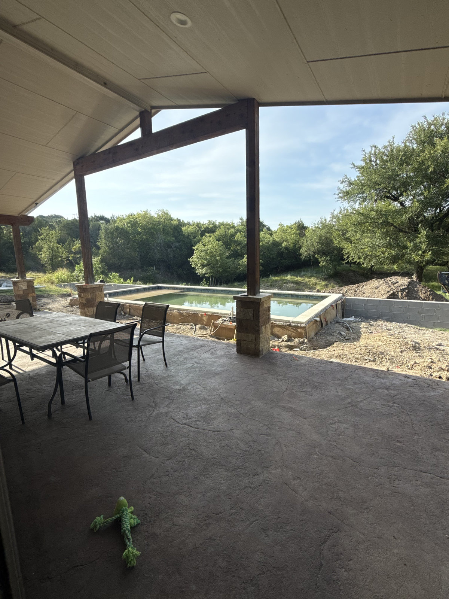
01Prep and Grade Old surface cleared and the ground cut and shaped around the pool before anything gets formed. -
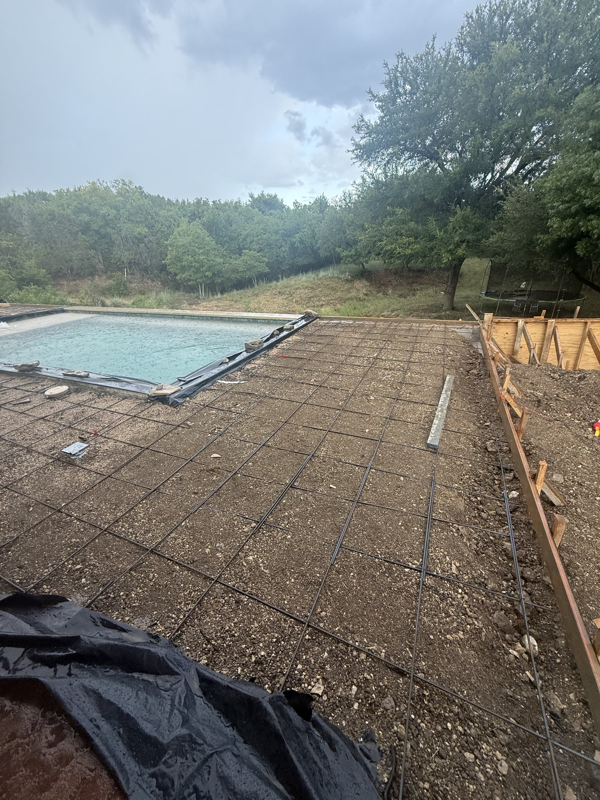
02Forms and Rebar Base compacted, forms set to fall, rebar tied in a grid across the whole deck. -
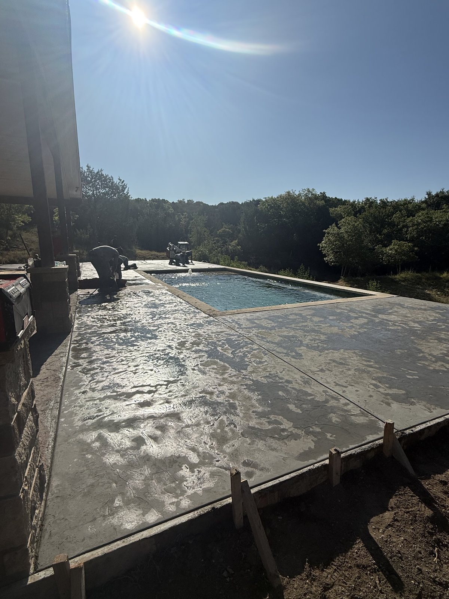
03Pour and Stamp Poured and stamped in one run, worked before it set so the pattern stays continuous. -
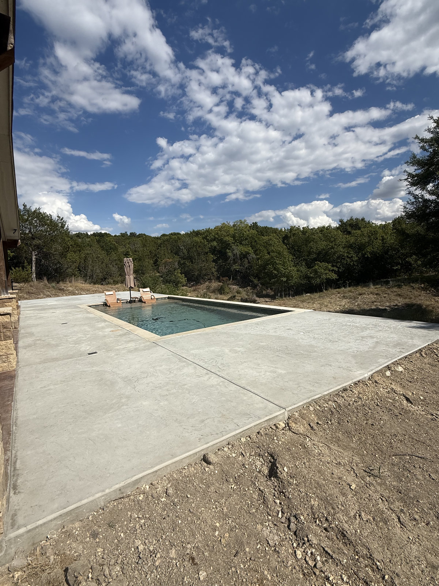
04Finished Full deck poured around three sides, joints cut, edges clean, draining away from the house.
Why Some Concrete Fails Early
Most of what goes wrong with a pour was decided before the truck showed up.
Base Prep
Soft or uneven base is the single biggest cause of a cracked slab. We cut, fill, and compact before anything gets formed.
Slope and Drainage
Every flat surface gets a fall built into it so water leaves, instead of standing on the slab or running back toward a building.
Thickness for the Use
A drive that holds a truck and trailer is a different pour than a walkway. We size it for the load it will actually carry.
Rebar and Control Joints
Rebar or mesh tied correctly and joints cut where the concrete wants to move, so it cracks where you planned instead of where it shows.
Retaining Walls
Walls built to hold back what is actually behind them, with drainage behind the wall so hydrostatic pressure does not push it over.
Finish
Broom, trowel, or stamped depending on where it is and what it needs to do. Clean edges and a consistent surface across the whole pour.
Four Steps, Dirt to Finish
Walk the Site
We look at the ground, where the water goes, and what the surface has to hold. Then you get a written scope and price at no cost.
Cut and Compact
Grade cut to the right elevation, base built and compacted, drainage sorted before a single form goes down.
Form and Pour
Forms set to line and fall, steel tied, and the pour finished the way the surface needs. Joints cut before the concrete tells us where it wants to crack.
Clean and Walk
Forms pulled, site cleaned up, debris hauled off with our own dumpsters, and we walk the finished work with you.
Drives, Slabs, and Pads
Concrete and dirt work from jobs across Erath County and the surrounding area.
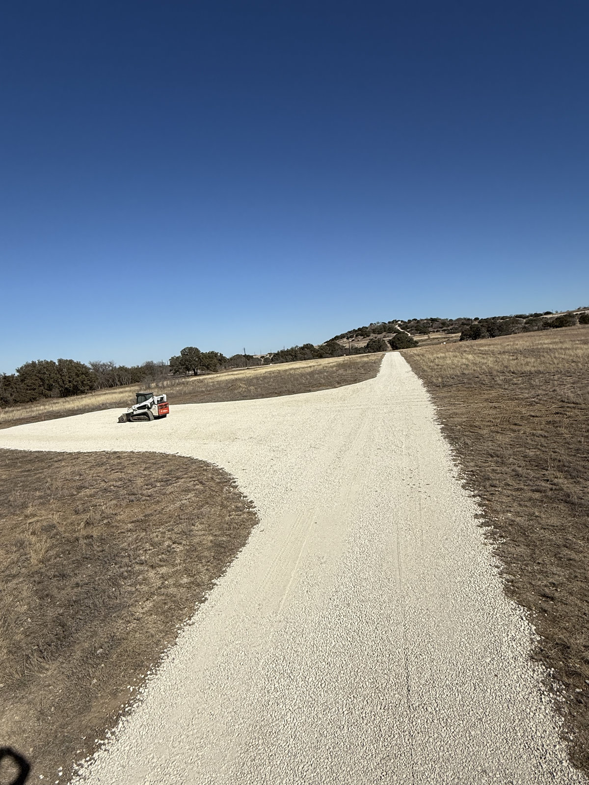
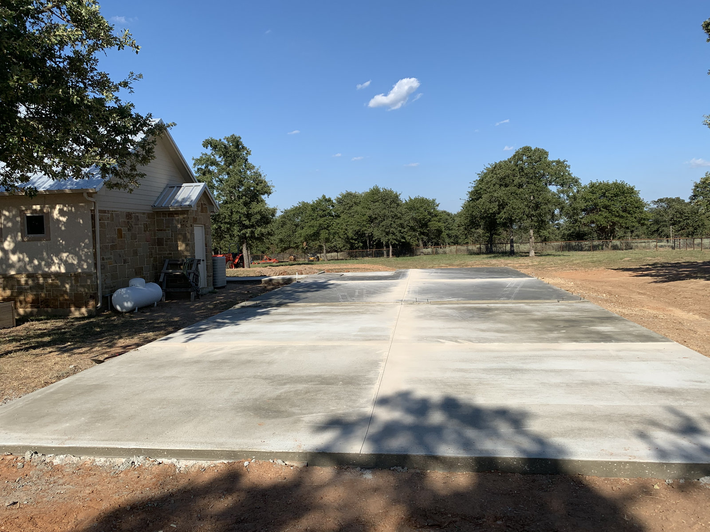
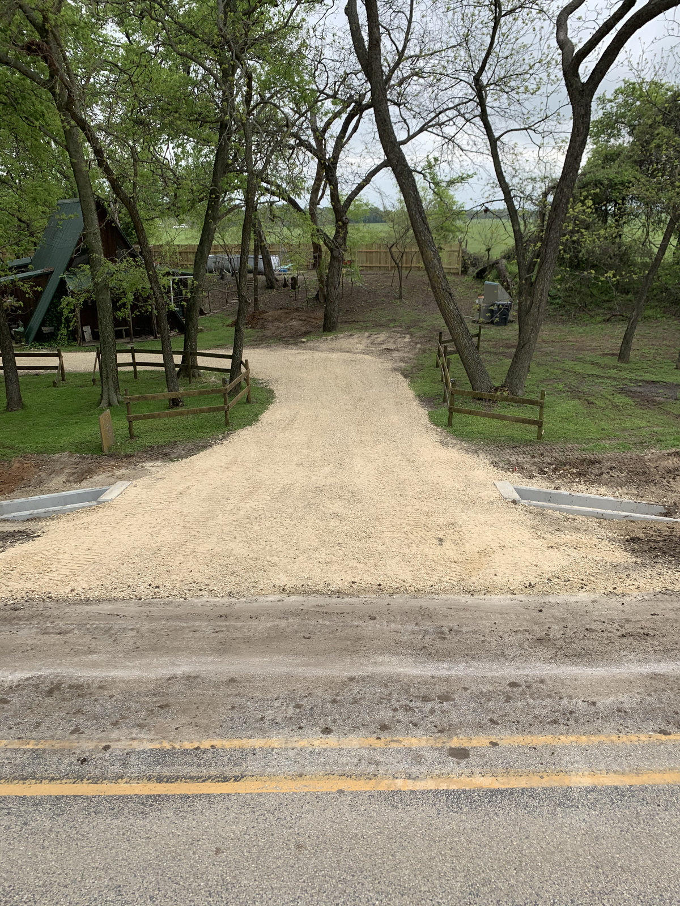
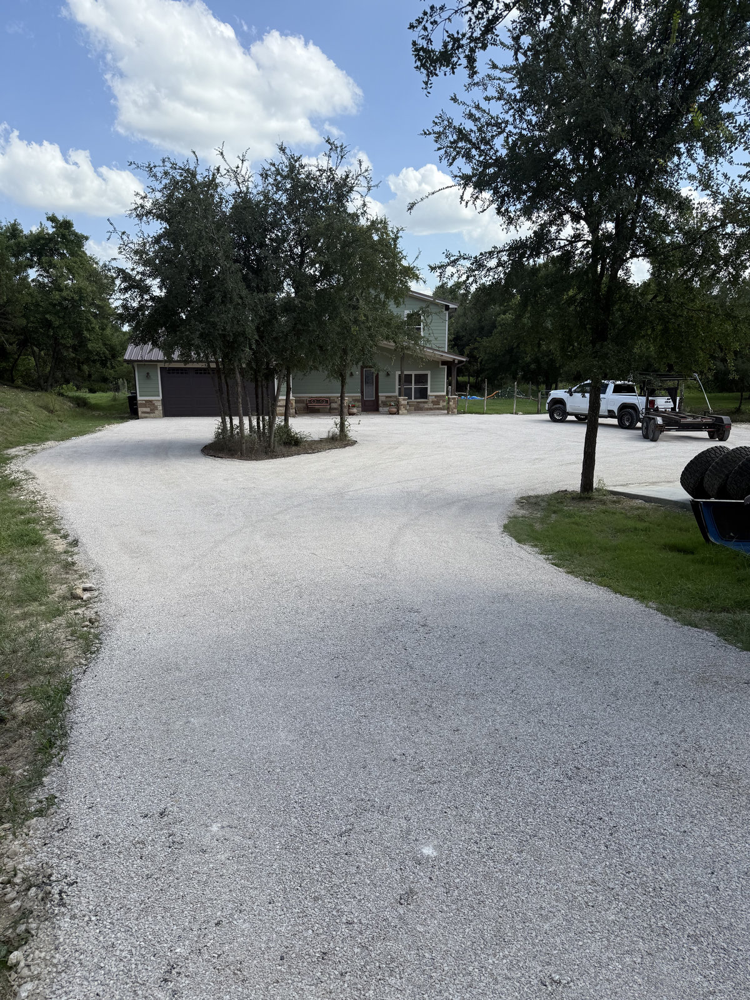
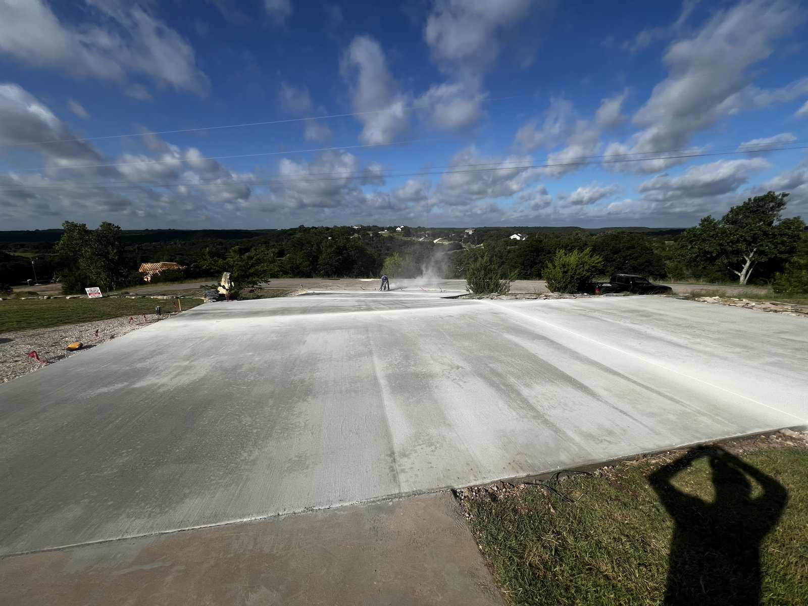
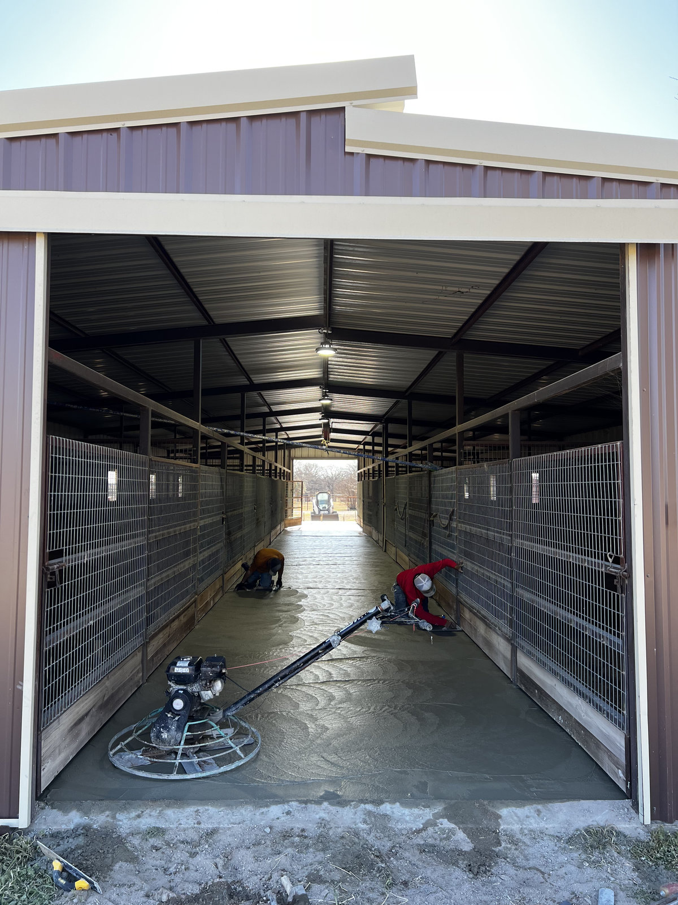
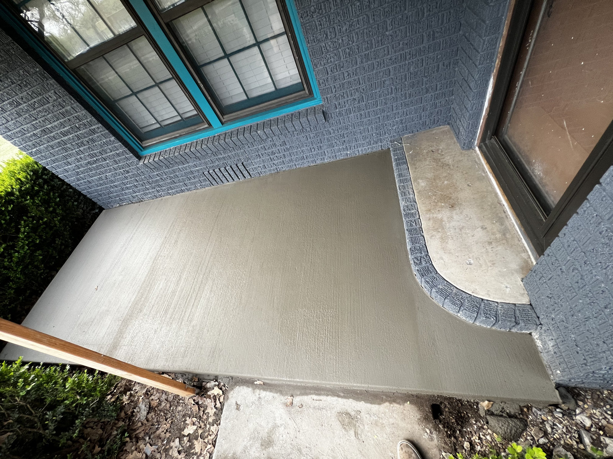
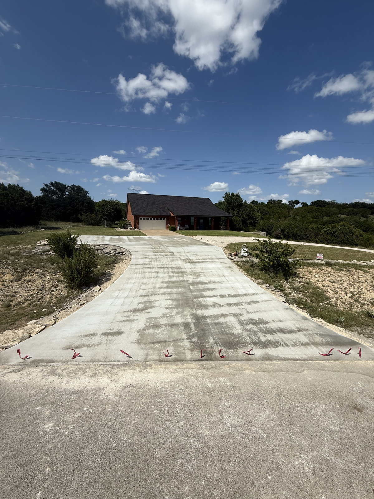
Need a Drive, a Slab, or a Pad?
Tell us what you are trying to pour and where. We will come look at the ground and put a real number in writing at no cost.
(512) 525-6475